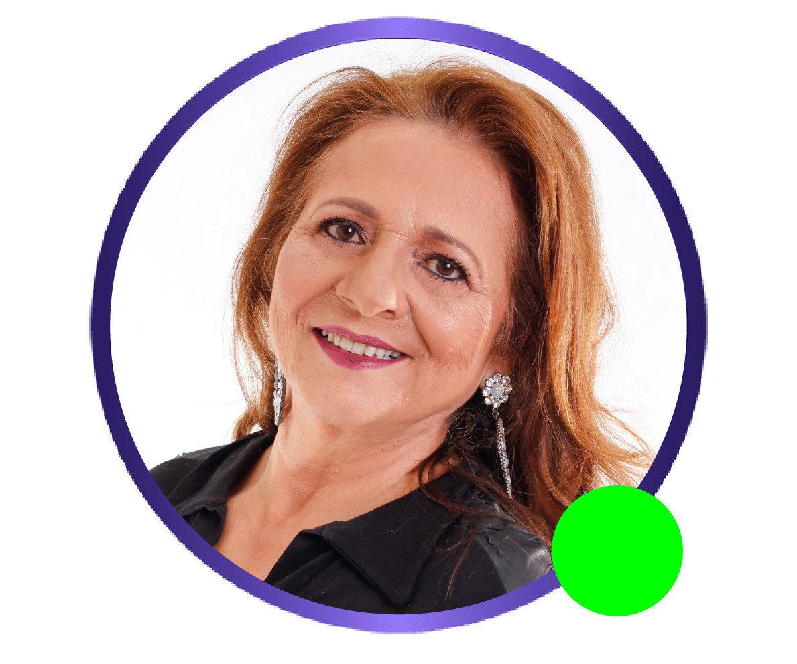

Soy santera y quiero compartir mi don usted, para que pueda resolver las dudas que rondan en su mente y su corazón en total intimidad. Con una conexión fuerte y respuestas en el momento mediante su tirada gratuita de tarot por teléfono. Estoy aquí, hoy y ahora, para guiarle y ayudarle en su camino.

$8.99
$1 los 5 primeros minutos
$2.90/ min adicional
$8.99
$1 los 5 primeros minutos
$2.90/ min adicional